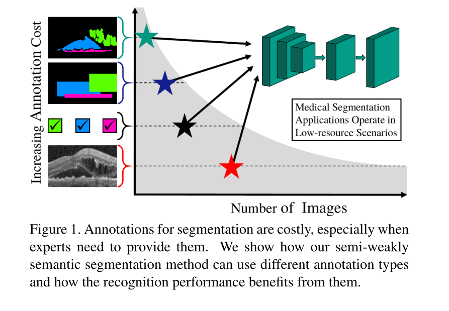
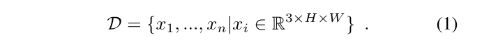
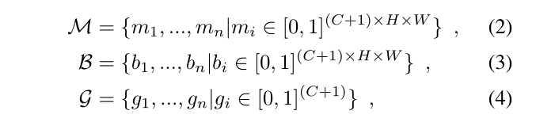
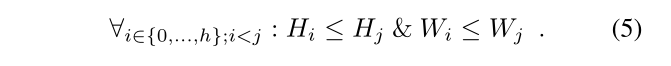
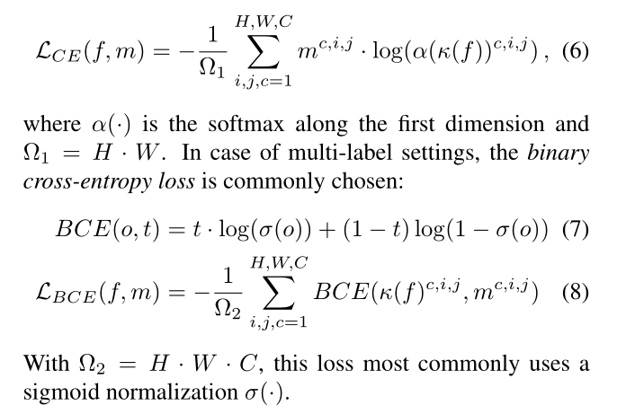
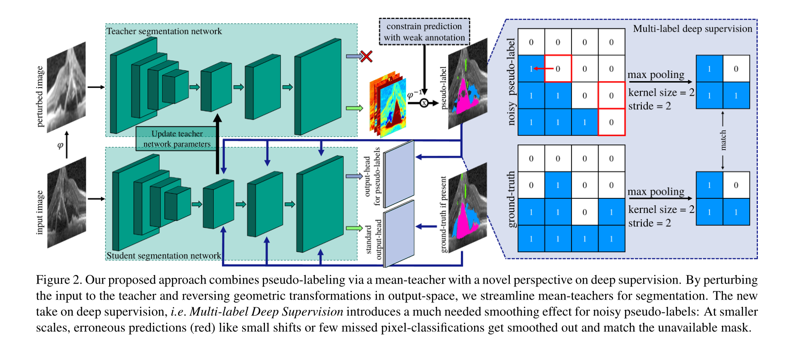
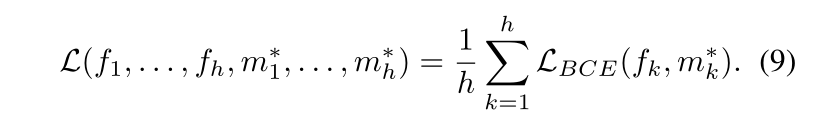
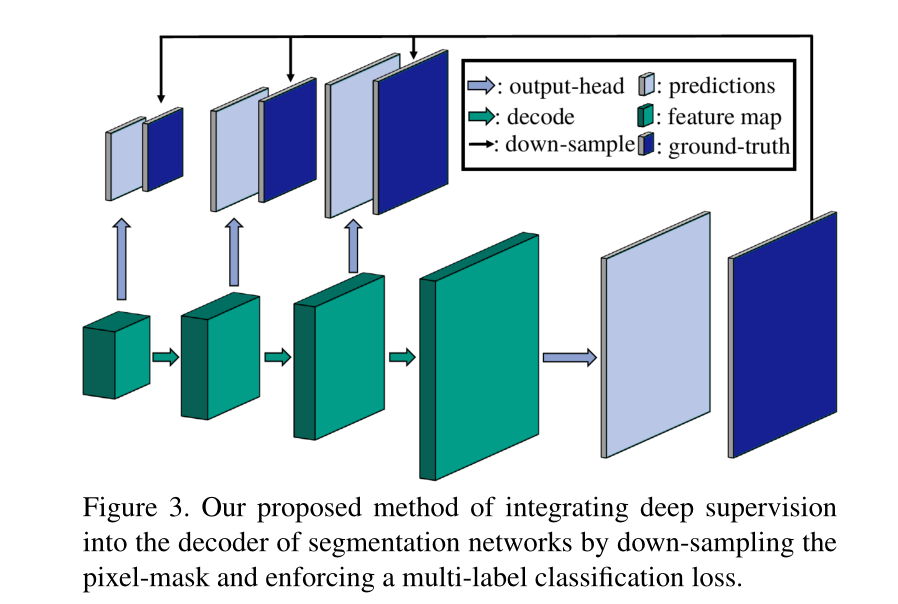
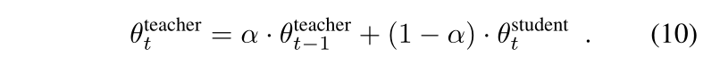

Every Annotation Counts: Multi-label Deep Supervision for Medical Image Segmentation
-
CVPR 2021
-
代码未开源
-
关键词：semi-weakly supervised、pseudo-labels、Multi-label Deep Supervision、Self-Taught Deep Supervision、Mean-Taught Deep Supervision
Abstract
针对医学图像分割任务，本论文提出一种半-弱监督方法（semi-weakly supervised segmentation algorithm ），该方法建立在深度监督和师生模式的基础上，并且容易整合不同的监督信号。考虑如何将深监督整合到较低的层次，multi-label deep supervision 是本方法成果的关键。
通过提出的训练机制（novel training regime for segmentation），可以灵活利用图像，这些图像要么有像素级标注、要么有边框标注、要么有全局标注、要么无标注。将标注需求降低 94.22%，比全监督的方法只降低 5% mIoU。在视网膜液分割数据集上进行实验验证。
1 Introduction
像素级标注在医学图像语义分割任务中获取代价昂贵。因此，所面临的问题是最小化所需的注释工作，同时最大化模型的准确性。

现有的方法：结合无标注的数据，快速获取不同质量的弱标签，如从 image-level 到 bounding box 标注。半监督、弱监督方法（semi- and weakly-supervised approaches）取得了令人信服的结果。
针对像素级标注小数据集，本文提出通过一种新的深度监督，将训练信号整合到分割网络层中，通过丰富的未标注图像放大这些信号。然后利用 mean-teacher 分割模型推理出健壮的伪标签（pseudo-labels）
本文的贡献：
（1）对不同数量的训练样本和大量不同的监督类型进行了深入的研究，以实现语义分割；
（2）引入了一种新的深度监督范式，适用于所提出的 Multi-label Deep Supervision 技术，在此基础上，引入了灵活的半-弱监督路径来集成未标记或弱标记的图像：新的自学深度监督方法（Self-Taught Deep Supervision）。
（3）Mean-Taught Deep Supervision 增加了对扰动的不变性和健壮的伪标签生成，获得了接近完全监督基线的结果，而只使用了 5.78% 的标签。
3 Proposed Approach
semi-weakly supervised semantic segmentation
Multi-label Deep Supervision
对于半-弱监督的语义分割（semi-weakly supervised semantic segmentation），图像数据集为：

- 图像 $x_i$ 可以有不同的标注，如：
- $m_i$：pixel-wise annotated mask
- $b_i$：bounding box
- $g_i$：image-level label
- no annotation（无标注）

对于每张图像 $x \in \mathcal{D}$，并不一定包含对于的分割图 $\mathcal{M}$。即每张图像可能有 mask、bounding box、image-level label 或无标注。对于没有 mask 情况，称为半监督分割。
Supervision integration
在 encoder-decoder 架构中集成额外的输出（deep supervision）。这些输出在decoder 中的特征图 $f_0, …, f_h$ 上进行操作。其中，$f_0$ 是 decoder 最里面的特征图，$f_h$ 是最外边的特征图。
特征图 $f_i$ 的空间维度为 $H_i \times W_i$：

- 实验中：$H_0 « H_h$，$W_0 « W_h$
- 输出头 $k_i$ 基于 $f_i$ 计算预测结果：$k_i(f_i) \in \mathbb{R}^{C \times H_i \times W_i}$
深监督信号（Supervision signals）
不同的监督模式需要不同的损失函数，在有像素级掩码（seg map）的情况下，训练语义分割模型最常见的目标是最小化交叉熵损失：

3.2 Multi-label Deeply Supervised Nets

参数高效的多标签深度监督
深度监督集成到分割网络中的方式存在问题。即，全尺寸的 ground-truth 和网络特征图的空间分辨率之间的空间维度不匹配。
The problem we identify is the way deep supervision is commonly integrated into segmentation networks. Specifically, the challenge arises due to the mismatch in spatial dimensions between the full-scale ground-truth mask and the smaller spatial resolution within the network’s feature maps (Equation 5).
除了使用有损的最近邻插值外，大多数工作是迫使网络学习提升尺度（up-scaling）来解决 ground-truth mask 和 low-resolution spatial features 之间的不匹配。up-scaling 后，标准的输出头将特征图转换为与 mask 相同的 size。
总结两个缺点：
（1）网络必须学会 up-scaling，代价是额外的参数；
（2）中间特征担负着对输出空间中复杂的分类信息和空间关系进行建模的重任，我们怀疑这些信息和空间关系在解码过程中是有用的，但可能只是作为更稳定梯度的跳跃连接。
(2) intermediate features are burdened to model complex classification information and spatial relations in output space that we question to be useful in the decoding process, but presumably only serve as skip-connections for more stable gradients.
本论文建议将特征图中每个位置（x，y）的每个特征向量 $f^{:,x,y}$ 建模为其在输入图像中感受野的 patch-descriptors。因此，我们的目标是将 patch-descriptors 的感受野中包含的所有像素的语义信息植入模型。我们认为，这可以通过强制执行多标签损失来实现，其标签包含接受域中存在的所有语义类别。
由此可见，我们可以简单地缩小 ground-truth mask 的比例，使之与特征图的大小相匹配，而不需要花费任何参数，并包含限制在感受野中的所有类别的标签，以保留语义信息。
down-scaling 过程可以通过 max-pooling 实现。降尺度后的目标 $m_i^{*} \in \mathbb{R}^{C \times H_i \times W_i}$ 包含特征 $f_i^{:,x, y}$ （patch-descriptor，由特征感受野内的空间位置汇总而成）的多标签 Ground Truth。

- down-scaled multi-label ground-truths: $m$
- feature maps: $f$

Self-taught deep supervision
使用多标签深度监督（Multi-label Deep Supervision）生成伪标签，下采样平滑了噪声监督信号（Fig 2. Right）。
Self-taught Deep Supervision 通过如下方式为未标注样本生成 binary ground-truth tensor。
- 将未标注图像 $x_i$ 通过分割网络获得伪标签 $p_i$；
- 利用伪标签实施 Multi-label Deep Supervision；
- 最外层对真实 ground-truth 和 pseudo-label 设置单独的输出头；
- 一个输出头使用干净的标签计算交叉熵损失；
- 另一个输出头使用公式（9）和伪标签计算损失；
- 伪标签的推理生成，使用的是干净标签的输出头；
如果 image-level label $g_i$ 可以获取，可以进一步将生成的伪标签约束到包含在 $g_i$ 中的类。以类似的方式，相关联的边界框标签 $b_i$ 可以将伪标签约束为位于粗略区域内。这导致了弱标签图像的灵活集成，以提高伪标签质量。
Mean-taught deep supervision.
通过(1)强制关于扰动的一致预测和(2)使用教师模型来生成更健壮的伪标签，该教师模型是先前迭代的所有模型的组合。
Mean-Teachers（即先前模型参数的指数移动平均数）
通过使用学生模型和先前教师模型的移动平均值不断更新教师模型的参数来维护教师模型，可以获得更好的预测。因此，教师不会单独接受培训，而只是通过以下方式进行更新：

- $\theta$ 表示模型参数
- $t$ 表示训练迭代
- $\alpha$ 平滑参数
4 Experiments
output-head for pseudo-labels 和 standard output-head 有什么区别？
- goround truth 不同，噪声伪标签用于平滑
过分割问题，是否可以加入一个分类的深监督来缓解？
多尺度 concatenate 和这个方法的区别？